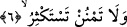

6. Yaptığın iyiliği çok görerek başa kakma.
Bir başka ifâdeyle verirken bunu çok görerek verme, ya da daha çoğunu talep ederek
verme. Bu son anlamda âyet “istiğzar”ı yasaklamış olmaktadır.
/İstiğzar; insanın
birine, karşılığında daha çoğunu verir ümidiyle bir şeyi bağışlamasıdır. Bu hareket
câizdir. Bu anlamda Peygamber (s.a.) Efendimiz; “İstiğzar yapan yaptığı bağıştan
sevaba erer” [183] buyurmuşlardır. Yâni bunu yapan kimse hibesinin karşılığına erer,
denmiş olmaktadır. Bu kelimenin kökü olan “ğazâra” çokluk anlamınadır. Âyetteki
yasaklama ya haramlık ya da tenzih ifâde eder. Haram olma durumu olduğu takdirde bu,
Peygamber (s.a.) Efendimiz’e mahsustur. Çünkü Hz. Peygamber’in güzel ahlâk
hususunda makamın ulviyetini koruması gerekir. Bundan dolayı zekat Peygamberin (s.a.)
ümmetine helâl olurken -şerefinden dolayı- kendisine ve âile ferdlerine helâl
kılınmamıştır.
Tenzih hükmüne gelince bu takdirde âyetteki yasaklık herkese yönelik olur. Yâni hem
Peygamber (s.a.) Efendimiz’e hem de onun ümmetine yasaklık getirilmiş olur.
Bâzı âlimlere göre âyetteki “lâ temnun” kelimesi -verdiğini çok görmek anlamına
değil de- başa kakmak anlamına gelen “minnet” kökünden türemiştir. Başa kakmak
yapılan iyiliği yıkıp yerle bireder. Özellikle kişi yaptığı amel ile Allah’a karşı başa
kakma fiilinde bulunup amelini çok görürse amellerinin tümü boşa gider. Çünkü amel,
Allah’tan kula karşı bir minnettir, ihsandir. Nitekim Allah şöyle buyurur: “Sizi îmâna
erdirdiği için asıl Allah size lutufta bulunmuştur.” (el-Hucurat, 49/17) Bir kimse
ömrü boyunca ibâdet ederek Allah’a şükretse -sayılamayacak kadar vermiş olduğu
çeşitli nimetler bir yana- sâdece yaratılış nimetinin şükrünü edâ edemez.
7. Rabbinin rızâsına ermek için sabret.
“Rabbin için sabret.” Yâni Rabbinin hükmüne sabret, müşriklerin eziyetlerinden
elem duyma. Çünkü tebliğe memur olan kimsenin insanların eziyetlerinden uzak kalması
mümkün değildir. Fakat sabırla acı olan şey tatlıya dönüşür. Sıkıntılara katlanıp çaba
göstermek insana zevk verir.
Tahammül insana önce zehir gibi görünür,
Fakat tabîatta yerleşince bal olur.
Mârifet ehli âriflerden biri şöyle der: Günah işlemeye karşı sabır, Allah’ın hükmüne